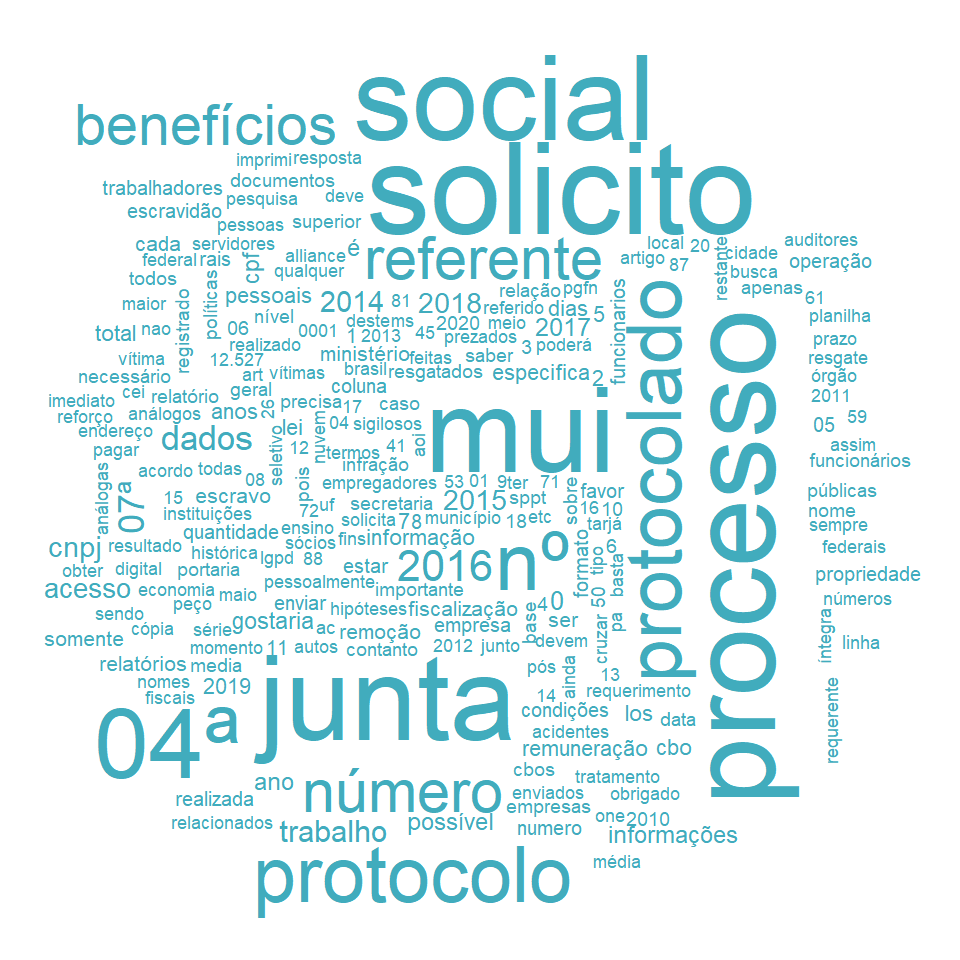

library(tidyverse)#> ── Attaching packages ─────────────────────────────────────── tidyverse 1.3.2 ──#> ✔ ggplot2 3.3.6 ✔ purrr 0.3.5 #> ✔ tibble 3.1.8 ✔ dplyr 1.0.10#> ✔ tidyr 1.2.1 ✔ stringr 1.4.1 #> ✔ readr 2.1.3 ✔ forcats 0.5.2 #> ── Conflicts ────────────────────────────────────────── tidyverse_conflicts() ──#> ✖ dplyr::filter() masks stats::filter()#> ✖ dplyr::lag() masks stats::lag()library(here)#> here() starts at C:/Users/rdurl/OneDrive/Documentos/monitoramento-lailibrary(lubridate)#> #> Attaching package: 'lubridate'#> #> The following objects are masked from 'package:base':#> #> date, intersect, setdiff, unionlibrary(patchwork)library(scales)#> #> Attaching package: 'scales'#> #> The following object is masked from 'package:purrr':#> #> discard#> #> The following object is masked from 'package:readr':#> #> col_factorlibrary(gt)library(tidytext)library(wordcloud)#> Carregando pacotes exigidos: RColorBrewersource(here("src/00-plot-aesthetics.R"), encoding ="utf-8")#> You will likely need to install these fonts on your system as well.#> #> You can find them in [C:/Users/rdurl/AppData/Local/R/win-library/4.2/hrbrthemes/fonts/roboto-condensed]`%notin%`<-function(x, y) !(x %in% y)
Base de dados - visão geral
Foram analisados os Pedidos de Acesso a Informação (pedidos LAI) enviados aos órgãos do Governo Federal e disponibilizados pelo portal FalaBr. Foram selecionados para análise somente as respostas aos pedidos LAI onde o órgão negou acesso ao solicitante (decisao = "Acesso Negado"), totalizando 43.517 respostas analisadas.
Código
base <-readRDS(here("data/base-cgu-filtrada.rds"))ids_acesso_negado <- base %>%filter(base =="Pedidos") %>%select(datasets) %>%unnest(datasets) %>%filter(decisao =="Acesso Negado") %>%pull(id_pedido)nr_protocolo <- base %>%filter(base =="Pedidos") %>%select(datasets) %>%unnest(datasets) %>%filter(decisao =="Acesso Negado") %>%select(id_pedido, protocolo)pedidos <-readRDS(here("data/pedidos-clean.rds"))recursos <-readRDS(here("data/recursos-clean.rds"))
Termos pesquisados nas respostas
Foram analisados os conteúdos das respostas dos pedidos selecionados, identificando quais deles mencionam alguma combinação dos termos abaixo:
"o tratamento das informacoes pessoais deve ser feito de forma transparente e com respeito a intimidade vida privada honra e imagem das pessoas bem como as liberdades e garantias individuais"
"comprovacao da identidade do requerente|faz se necessaria a identificacao pessoal do titular|identificacao (do)?requerente"
Código
#|label: busca-por-pedidospedidos_busca <- pedidos %>%filter(id_pedido %in% ids_acesso_negado) %>% tidylog::left_join(nr_protocolo) %>%transmute(id_pedido = id_pedido,protocolo = protocolo,data_registro = data_registro,data_resposta = data_resposta,orgao = orgao,detalhamento = detalhamento_clean,resposta_pedido = resposta_clean,resumo = resumo_clean,menciona_art_31_lei_12527 =str_detect(resposta_clean, "o tratamento das informacoes pessoais deve ser feito de forma transparente e com respeito a intimidade vida privada honra e imagem das pessoas bem como as liberdades e garantias individuais"),menciona_art_60_dec_7724 =str_detect(resposta_clean, "comprovacao da identidade do requerente|faz se necessaria a identificacao pessoal do titular|identificacao (do)?requerente") )#> Joining, by = "id_pedido"#> left_join: added one column (protocolo)#> Warning in prettyNum(r, big.mark = big.mark, big.interval = big.interval, :#> 'big.mark' and 'decimal.mark' are both ',', which could be confusing#> Warning in prettyNum(r, big.mark = big.mark, big.interval = big.interval, :#> 'big.mark' and 'decimal.mark' are both ',', which could be confusing#> Warning in prettyNum(r, big.mark = big.mark, big.interval = big.interval, :#> 'big.mark' and 'decimal.mark' are both ',', which could be confusing#> Warning in prettyNum(r, big.mark = big.mark, big.interval = big.interval, :#> 'big.mark' and 'decimal.mark' are both ',', which could be confusing#> > rows only in x 0#> > rows only in y ( 0)#> > matched rows 43,517#> > ========#> > rows total 43,517
A alegação de sigilo é legítima quando o requerente solicita uma informação pessoal sem a devida comprovação de sua identidade. Estamos interessados nos pedidos com acesso negado que citam diretamente o artigo 30 da LAI sem fazer menções à necessidade de comprovação de identidade de requerente. O número de pedidos que atendem a este padrão é de 995.
Os pedidos foram agrupados em 3 categorias, onde as negativas citam:
A necessidade de comprovação de identidade de requerente.
A necessidade de tratamento de informações pessoais (Art. 31 da LAI).
Outras justificativas.
Clique aqui para ver os pedidos negados que alegam a necessidade de tratamento de informações pessoais
As núvens de palavra abaixo são referentes a 456 pedidos direcionaos aos INSS. Foram extraídas as frequências de palavras de resumos de pedido, conteúdo de pedidos e conteúdo de resposta do pedido.
pedidos_inss %>%select( id_pedido, detalhamento ) %>%unnest_tokens(word, detalhamento) %>%anti_join(stopwords) %>%count(word, sort =TRUE) %>%with(wordcloud(word, n, max.words =350, colors = cores_tb[["azul"]]))#> Joining, by = "word"#> Warning in wordcloud(word, n, max.words = 350, colors = cores_tb[["azul"]]):#> empregados could not be fit on page. It will not be plotted.#> Warning in wordcloud(word, n, max.words = 350, colors = cores_tb[["azul"]]):#> tempo could not be fit on page. It will not be plotted.#> Warning in wordcloud(word, n, max.words = 350, colors = cores_tb[["azul"]]):#> acesso could not be fit on page. It will not be plotted.#> Warning in wordcloud(word, n, max.words = 350, colors = cores_tb[["azul"]]):#> municipal could not be fit on page. It will not be plotted.#> Warning in wordcloud(word, n, max.words = 350, colors = cores_tb[["azul"]]):#> constitucional could not be fit on page. It will not be plotted.#> Warning in wordcloud(word, n, max.words = 350, colors = cores_tb[["azul"]]):#> receber could not be fit on page. It will not be plotted.#> Warning in wordcloud(word, n, max.words = 350, colors = cores_tb[["azul"]]):#> precisando could not be fit on page. It will not be plotted.#> Warning in wordcloud(word, n, max.words = 350, colors = cores_tb[["azul"]]):#> necessito could not be fit on page. It will not be plotted.#> Warning in wordcloud(word, n, max.words = 350, colors = cores_tb[["azul"]]):#> janeiro could not be fit on page. It will not be plotted.#> Warning in wordcloud(word, n, max.words = 350, colors = cores_tb[["azul"]]):#> gostaria could not be fit on page. It will not be plotted.#> Warning in wordcloud(word, n, max.words = 350, colors = cores_tb[["azul"]]):#> solicitação could not be fit on page. It will not be plotted.#> Warning in wordcloud(word, n, max.words = 350, colors = cores_tb[["azul"]]):#> sistema could not be fit on page. It will not be plotted.#> Warning in wordcloud(word, n, max.words = 350, colors = cores_tb[["azul"]]):#> nomes could not be fit on page. It will not be plotted.#> Warning in wordcloud(word, n, max.words = 350, colors = cores_tb[["azul"]]):#> aposentadoria could not be fit on page. It will not be plotted.#> Warning in wordcloud(word, n, max.words = 350, colors = cores_tb[["azul"]]):#> download could not be fit on page. It will not be plotted.#> Warning in wordcloud(word, n, max.words = 350, colors = cores_tb[["azul"]]):#> contribuição could not be fit on page. It will not be plotted.#> Warning in wordcloud(word, n, max.words = 350, colors = cores_tb[["azul"]]):#> histórico could not be fit on page. It will not be plotted.#> Warning in wordcloud(word, n, max.words = 350, colors = cores_tb[["azul"]]):#> vinculados could not be fit on page. It will not be plotted.#> Warning in wordcloud(word, n, max.words = 350, colors = cores_tb[["azul"]]):#> empregado could not be fit on page. It will not be plotted.#> Warning in wordcloud(word, n, max.words = 350, colors = cores_tb[["azul"]]):#> solicito could not be fit on page. It will not be plotted.#> Warning in wordcloud(word, n, max.words = 350, colors = cores_tb[["azul"]]):#> desta could not be fit on page. It will not be plotted.#> Warning in wordcloud(word, n, max.words = 350, colors = cores_tb[["azul"]]):#> sociais could not be fit on page. It will not be plotted.#> Warning in wordcloud(word, n, max.words = 350, colors = cores_tb[["azul"]]):#> parlamentar could not be fit on page. It will not be plotted.#> Warning in wordcloud(word, n, max.words = 350, colors = cores_tb[["azul"]]): bem#> could not be fit on page. It will not be plotted.#> Warning in wordcloud(word, n, max.words = 350, colors = cores_tb[["azul"]]):#> previsto could not be fit on page. It will not be plotted.#> Warning in wordcloud(word, n, max.words = 350, colors = cores_tb[["azul"]]):#> atenção could not be fit on page. It will not be plotted.#> Warning in wordcloud(word, n, max.words = 350, colors = cores_tb[["azul"]]):#> quais could not be fit on page. It will not be plotted.#> Warning in wordcloud(word, n, max.words = 350, colors = cores_tb[["azul"]]):#> maria could not be fit on page. It will not be plotted.#> Warning in wordcloud(word, n, max.words = 350, colors = cores_tb[["azul"]]):#> todos could not be fit on page. It will not be plotted.#> Warning in wordcloud(word, n, max.words = 350, colors = cores_tb[["azul"]]):#> cnis could not be fit on page. It will not be plotted.#> Warning in wordcloud(word, n, max.words = 350, colors = cores_tb[["azul"]]):#> rendimentos could not be fit on page. It will not be plotted.#> Warning in wordcloud(word, n, max.words = 350, colors = cores_tb[["azul"]]):#> emenda could not be fit on page. It will not be plotted.#> Warning in wordcloud(word, n, max.words = 350, colors = cores_tb[["azul"]]):#> solicitamos could not be fit on page. It will not be plotted.#> Warning in wordcloud(word, n, max.words = 350, colors = cores_tb[["azul"]]):#> vínculos could not be fit on page. It will not be plotted.#> Warning in wordcloud(word, n, max.words = 350, colors = cores_tb[["azul"]]):#> previdenciárias could not be fit on page. It will not be plotted.#> Warning in wordcloud(word, n, max.words = 350, colors = cores_tb[["azul"]]):#> seguro could not be fit on page. It will not be plotted.#> Warning in wordcloud(word, n, max.words = 350, colors = cores_tb[["azul"]]):#> refere could not be fit on page. It will not be plotted.#> Warning in wordcloud(word, n, max.words = 350, colors = cores_tb[["azul"]]):#> hoje could not be fit on page. It will not be plotted.#> Warning in wordcloud(word, n, max.words = 350, colors = cores_tb[["azul"]]):#> falta could not be fit on page. It will not be plotted.#> Warning in wordcloud(word, n, max.words = 350, colors = cores_tb[["azul"]]):#> constantes could not be fit on page. It will not be plotted.#> Warning in wordcloud(word, n, max.words = 350, colors = cores_tb[["azul"]]):#> salário could not be fit on page. It will not be plotted.#> Warning in wordcloud(word, n, max.words = 350, colors = cores_tb[["azul"]]):#> 2020 could not be fit on page. It will not be plotted.#> Warning in wordcloud(word, n, max.words = 350, colors = cores_tb[["azul"]]):#> grato could not be fit on page. It will not be plotted.#> Warning in wordcloud(word, n, max.words = 350, colors = cores_tb[["azul"]]):#> 2019 could not be fit on page. It will not be plotted.#> Warning in wordcloud(word, n, max.words = 350, colors = cores_tb[["azul"]]):#> contribuiçao could not be fit on page. It will not be plotted.#> Warning in wordcloud(word, n, max.words = 350, colors = cores_tb[["azul"]]):#> emprego could not be fit on page. It will not be plotted.#> Warning in wordcloud(word, n, max.words = 350, colors = cores_tb[["azul"]]):#> órgão could not be fit on page. It will not be plotted.#> Warning in wordcloud(word, n, max.words = 350, colors = cores_tb[["azul"]]):#> resposta could not be fit on page. It will not be plotted.#> Warning in wordcloud(word, n, max.words = 350, colors = cores_tb[["azul"]]):#> nacional could not be fit on page. It will not be plotted.#> Warning in wordcloud(word, n, max.words = 350, colors = cores_tb[["azul"]]):#> consigo could not be fit on page. It will not be plotted.#> Warning in wordcloud(word, n, max.words = 350, colors = cores_tb[["azul"]]):#> beneficio could not be fit on page. It will not be plotted.#> Warning in wordcloud(word, n, max.words = 350, colors = cores_tb[["azul"]]):#> 0001 could not be fit on page. It will not be plotted.#> Warning in wordcloud(word, n, max.words = 350, colors = cores_tb[["azul"]]):#> ocorre could not be fit on page. It will not be plotted.#> Warning in wordcloud(word, n, max.words = 350, colors = cores_tb[["azul"]]):#> terceiro could not be fit on page. It will not be plotted.#> Warning in wordcloud(word, n, max.words = 350, colors = cores_tb[["azul"]]):#> completo could not be fit on page. It will not be plotted.#> Warning in wordcloud(word, n, max.words = 350, colors = cores_tb[["azul"]]):#> feitos could not be fit on page. It will not be plotted.#> Warning in wordcloud(word, n, max.words = 350, colors = cores_tb[["azul"]]):#> meses could not be fit on page. It will not be plotted.
Código
pedidos_inss %>%select( id_pedido, resposta ) %>%unnest_tokens(word, resposta) %>%anti_join(stopwords) %>%count(word, sort =TRUE) %>%with(wordcloud(word, n, max.words =350, colors = cores_aep[["marrom"]]))#> Joining, by = "word"#> Warning in wordcloud(word, n, max.words = 350, colors = cores_aep[["marrom"]]):#> ser could not be fit on page. It will not be plotted.#> Warning in wordcloud(word, n, max.words = 350, colors = cores_aep[["marrom"]]):#> inss could not be fit on page. It will not be plotted.#> Warning in wordcloud(word, n, max.words = 350, colors = cores_aep[["marrom"]]):#> agentes could not be fit on page. It will not be plotted.#> Warning in wordcloud(word, n, max.words = 350, colors = cores_aep[["marrom"]]):#> informações could not be fit on page. It will not be plotted.#> Warning in wordcloud(word, n, max.words = 350, colors = cores_aep[["marrom"]]):#> devem could not be fit on page. It will not be plotted.#> Warning in wordcloud(word, n, max.words = 350, colors = cores_aep[["marrom"]]):#> bem could not be fit on page. It will not be plotted.#> Warning in wordcloud(word, n, max.words = 350, colors = cores_aep[["marrom"]]):#> garantias could not be fit on page. It will not be plotted.#> Warning in wordcloud(word, n, max.words = 350, colors = cores_aep[["marrom"]]):#> feito could not be fit on page. It will not be plotted.#> Warning in wordcloud(word, n, max.words = 350, colors = cores_aep[["marrom"]]):#> contribuição could not be fit on page. It will not be plotted.#> Warning in wordcloud(word, n, max.words = 350, colors = cores_aep[["marrom"]]):#> comunicação could not be fit on page. It will not be plotted.#> Warning in wordcloud(word, n, max.words = 350, colors = cores_aep[["marrom"]]):#> consulte could not be fit on page. It will not be plotted.#> Warning in wordcloud(word, n, max.words = 350, colors = cores_aep[["marrom"]]):#> pessoais could not be fit on page. It will not be plotted.#> Warning in wordcloud(word, n, max.words = 350, colors = cores_aep[["marrom"]]):#> internet could not be fit on page. It will not be plotted.#> Warning in wordcloud(word, n, max.words = 350, colors = cores_aep[["marrom"]]):#> novamente could not be fit on page. It will not be plotted.#> Warning in wordcloud(word, n, max.words = 350, colors = cores_aep[["marrom"]]):#> poderão could not be fit on page. It will not be plotted.#> Warning in wordcloud(word, n, max.words = 350, colors = cores_aep[["marrom"]]):#> pessoas could not be fit on page. It will not be plotted.#> Warning in wordcloud(word, n, max.words = 350, colors = cores_aep[["marrom"]]):#> endereço could not be fit on page. It will not be plotted.#> Warning in wordcloud(word, n, max.words = 350, colors = cores_aep[["marrom"]]):#> cadastrada could not be fit on page. It will not be plotted.#> Warning in wordcloud(word, n, max.words = 350, colors = cores_aep[["marrom"]]):#> trabalhador could not be fit on page. It will not be plotted.#> Warning in wordcloud(word, n, max.words = 350, colors = cores_aep[["marrom"]]):#> máximo could not be fit on page. It will not be plotted.#> Warning in wordcloud(word, n, max.words = 350, colors = cores_aep[["marrom"]]):#> prazo could not be fit on page. It will not be plotted.#> Warning in wordcloud(word, n, max.words = 350, colors = cores_aep[["marrom"]]):#> pessoa could not be fit on page. It will not be plotted.#> Warning in wordcloud(word, n, max.words = 350, colors = cores_aep[["marrom"]]):#> lai could not be fit on page. It will not be plotted.#> Warning in wordcloud(word, n, max.words = 350, colors = cores_aep[["marrom"]]):#> refere could not be fit on page. It will not be plotted.#> Warning in wordcloud(word, n, max.words = 350, colors = cores_aep[["marrom"]]):#> processados could not be fit on page. It will not be plotted.#> Warning in wordcloud(word, n, max.words = 350, colors = cores_aep[["marrom"]]):#> geral could not be fit on page. It will not be plotted.#> Warning in wordcloud(word, n, max.words = 350, colors = cores_aep[["marrom"]]):#> imposto could not be fit on page. It will not be plotted.#> Warning in wordcloud(word, n, max.words = 350, colors = cores_aep[["marrom"]]):#> pagamento could not be fit on page. It will not be plotted.#> Warning in wordcloud(word, n, max.words = 350, colors = cores_aep[["marrom"]]):#> federal could not be fit on page. It will not be plotted.#> Warning in wordcloud(word, n, max.words = 350, colors = cores_aep[["marrom"]]):#> página could not be fit on page. It will not be plotted.#> Warning in wordcloud(word, n, max.words = 350, colors = cores_aep[["marrom"]]):#> cidadão could not be fit on page. It will not be plotted.#> Warning in wordcloud(word, n, max.words = 350, colors = cores_aep[["marrom"]]):#> intimidade could not be fit on page. It will not be plotted.#> Warning in wordcloud(word, n, max.words = 350, colors = cores_aep[["marrom"]]):#> anos could not be fit on page. It will not be plotted.#> Warning in wordcloud(word, n, max.words = 350, colors = cores_aep[["marrom"]]):#> condição could not be fit on page. It will not be plotted.#> Warning in wordcloud(word, n, max.words = 350, colors = cores_aep[["marrom"]]):#> dada could not be fit on page. It will not be plotted.#> Warning in wordcloud(word, n, max.words = 350, colors = cores_aep[["marrom"]]):#> respeito could not be fit on page. It will not be plotted.#> Warning in wordcloud(word, n, max.words = 350, colors = cores_aep[["marrom"]]):#> social could not be fit on page. It will not be plotted.#> Warning in wordcloud(word, n, max.words = 350, colors = cores_aep[["marrom"]]):#> podem could not be fit on page. It will not be plotted.#> Warning in wordcloud(word, n, max.words = 350, colors = cores_aep[["marrom"]]):#> sistema could not be fit on page. It will not be plotted.#> Warning in wordcloud(word, n, max.words = 350, colors = cores_aep[["marrom"]]):#> considerando could not be fit on page. It will not be plotted.#> Warning in wordcloud(word, n, max.words = 350, colors = cores_aep[["marrom"]]):#> consultarextratoir.xhtml could not be fit on page. It will not be plotted.#> Warning in wordcloud(word, n, max.words = 350, colors = cores_aep[["marrom"]]):#> constam could not be fit on page. It will not be plotted.#> Warning in wordcloud(word, n, max.words = 350, colors = cores_aep[["marrom"]]):#> pública could not be fit on page. It will not be plotted.#> Warning in wordcloud(word, n, max.words = 350, colors = cores_aep[["marrom"]]):#> identificação could not be fit on page. It will not be plotted.#> Warning in wordcloud(word, n, max.words = 350, colors = cores_aep[["marrom"]]):#> tratamento could not be fit on page. It will not be plotted.#> Warning in wordcloud(word, n, max.words = 350, colors = cores_aep[["marrom"]]):#> financeiras could not be fit on page. It will not be plotted.#> Warning in wordcloud(word, n, max.words = 350, colors = cores_aep[["marrom"]]):#> segurados could not be fit on page. It will not be plotted.#> Warning in wordcloud(word, n, max.words = 350, colors = cores_aep[["marrom"]]):#> respectiva could not be fit on page. It will not be plotted.#> Warning in wordcloud(word, n, max.words = 350, colors = cores_aep[["marrom"]]):#> pode could not be fit on page. It will not be plotted.#> Warning in wordcloud(word, n, max.words = 350, colors = cores_aep[["marrom"]]):#> verifique could not be fit on page. It will not be plotted.#> Warning in wordcloud(word, n, max.words = 350, colors = cores_aep[["marrom"]]):#> veicular could not be fit on page. It will not be plotted.#> Warning in wordcloud(word, n, max.words = 350, colors = cores_aep[["marrom"]]):#> atenciosamente could not be fit on page. It will not be plotted.#> Warning in wordcloud(word, n, max.words = 350, colors = cores_aep[["marrom"]]):#> transmissão could not be fit on page. It will not be plotted.#> Warning in wordcloud(word, n, max.words = 350, colors = cores_aep[["marrom"]]):#> após could not be fit on page. It will not be plotted.#> Warning in wordcloud(word, n, max.words = 350, colors = cores_aep[["marrom"]]):#> 12.527 could not be fit on page. It will not be plotted.#> Warning in wordcloud(word, n, max.words = 350, colors = cores_aep[["marrom"]]):#> orientações could not be fit on page. It will not be plotted.#> Warning in wordcloud(word, n, max.words = 350, colors = cores_aep[["marrom"]]):#> sigilo could not be fit on page. It will not be plotted.#> Warning in wordcloud(word, n, max.words = 350, colors = cores_aep[["marrom"]]):#> terceiros could not be fit on page. It will not be plotted.#> Warning in wordcloud(word, n, max.words = 350, colors = cores_aep[["marrom"]]):#> imagem could not be fit on page. It will not be plotted.#> Warning in wordcloud(word, n, max.words = 350, colors = cores_aep[["marrom"]]):#> cadastrar could not be fit on page. It will not be plotted.#> Warning in wordcloud(word, n, max.words = 350, colors = cores_aep[["marrom"]]):#> servicos could not be fit on page. It will not be plotted.#> Warning in wordcloud(word, n, max.words = 350, colors = cores_aep[["marrom"]]):#> formulação could not be fit on page. It will not be plotted.#> Warning in wordcloud(word, n, max.words = 350, colors = cores_aep[["marrom"]]):#> consultas could not be fit on page. It will not be plotted.
As núvens de palavra abaixo são referentes a 238 pedidos direcionaos aos Ministério da Economia. Foram extraídas as frequências de palavras de resumos de pedido, conteúdo de pedidos e conteúdo de resposta do pedido.
pedidos_me %>%select( id_pedido, detalhamento ) %>%unnest_tokens(word, detalhamento) %>%anti_join(stopwords) %>%count(word, sort =TRUE) %>%with(wordcloud(word, n, max.words =350, colors = cores_tb[["azul"]]))#> Joining, by = "word"#> Warning in wordcloud(word, n, max.words = 350, colors = cores_tb[["azul"]]):#> respeitosamente could not be fit on page. It will not be plotted.#> Warning in wordcloud(word, n, max.words = 350, colors = cores_tb[["azul"]]):#> acórdão could not be fit on page. It will not be plotted.#> Warning in wordcloud(word, n, max.words = 350, colors = cores_tb[["azul"]]):#> previdência could not be fit on page. It will not be plotted.#> Warning in wordcloud(word, n, max.words = 350, colors = cores_tb[["azul"]]):#> recursos could not be fit on page. It will not be plotted.#> Warning in wordcloud(word, n, max.words = 350, colors = cores_tb[["azul"]]):#> proferido could not be fit on page. It will not be plotted.

Código
pedidos_me %>%select( id_pedido, resposta ) %>%unnest_tokens(word, resposta) %>%anti_join(stopwords) %>%count(word, sort =TRUE) %>%with(wordcloud(word, n, max.words =350, colors = cores_aep[["marrom"]]))#> Joining, by = "word"#> Warning in wordcloud(word, n, max.words = 350, colors = cores_aep[["marrom"]]):#> economia could not be fit on page. It will not be plotted.#> Warning in wordcloud(word, n, max.words = 350, colors = cores_aep[["marrom"]]):#> acesso could not be fit on page. It will not be plotted.#> Warning in wordcloud(word, n, max.words = 350, colors = cores_aep[["marrom"]]):#> consultaprocessos.inss.gov.br could not be fit on page. It will not be plotted.#> Warning in wordcloud(word, n, max.words = 350, colors = cores_aep[["marrom"]]):#> julgamento could not be fit on page. It will not be plotted.#> Warning in wordcloud(word, n, max.words = 350, colors = cores_aep[["marrom"]]):#> divulgação could not be fit on page. It will not be plotted.#> Warning in wordcloud(word, n, max.words = 350, colors = cores_aep[["marrom"]]):#> diante could not be fit on page. It will not be plotted.#> Warning in wordcloud(word, n, max.words = 350, colors = cores_aep[["marrom"]]):#> agradece could not be fit on page. It will not be plotted.#> Warning in wordcloud(word, n, max.words = 350, colors = cores_aep[["marrom"]]):#> encontra could not be fit on page. It will not be plotted.#> Warning in wordcloud(word, n, max.words = 350, colors = cores_aep[["marrom"]]):#> âmbito could not be fit on page. It will not be plotted.#> Warning in wordcloud(word, n, max.words = 350, colors = cores_aep[["marrom"]]):#> tratamento could not be fit on page. It will not be plotted.#> Warning in wordcloud(word, n, max.words = 350, colors = cores_aep[["marrom"]]):#> advogados could not be fit on page. It will not be plotted.#> Warning in wordcloud(word, n, max.words = 350, colors = cores_aep[["marrom"]]):#> sigilo could not be fit on page. It will not be plotted.#> Warning in wordcloud(word, n, max.words = 350, colors = cores_aep[["marrom"]]):#> segurado could not be fit on page. It will not be plotted.#> Warning in wordcloud(word, n, max.words = 350, colors = cores_aep[["marrom"]]):#> referirem could not be fit on page. It will not be plotted.#> Warning in wordcloud(word, n, max.words = 350, colors = cores_aep[["marrom"]]):#> previdência could not be fit on page. It will not be plotted.#> Warning in wordcloud(word, n, max.words = 350, colors = cores_aep[["marrom"]]):#> esclarecemos could not be fit on page. It will not be plotted.#> Warning in wordcloud(word, n, max.words = 350, colors = cores_aep[["marrom"]]):#> pessoas could not be fit on page. It will not be plotted.#> Warning in wordcloud(word, n, max.words = 350, colors = cores_aep[["marrom"]]):#> máximo could not be fit on page. It will not be plotted.#> Warning in wordcloud(word, n, max.words = 350, colors = cores_aep[["marrom"]]):#> acórdão could not be fit on page. It will not be plotted.#> Warning in wordcloud(word, n, max.words = 350, colors = cores_aep[["marrom"]]):#> crps could not be fit on page. It will not be plotted.#> Warning in wordcloud(word, n, max.words = 350, colors = cores_aep[["marrom"]]):#> informação could not be fit on page. It will not be plotted.#> Warning in wordcloud(word, n, max.words = 350, colors = cores_aep[["marrom"]]):#> disponível could not be fit on page. It will not be plotted.#> Warning in wordcloud(word, n, max.words = 350, colors = cores_aep[["marrom"]]):#> art could not be fit on page. It will not be plotted.#> Warning in wordcloud(word, n, max.words = 350, colors = cores_aep[["marrom"]]):#> deve could not be fit on page. It will not be plotted.#> Warning in wordcloud(word, n, max.words = 350, colors = cores_aep[["marrom"]]):#> representam could not be fit on page. It will not be plotted.#> Warning in wordcloud(word, n, max.words = 350, colors = cores_aep[["marrom"]]):#> senhor could not be fit on page. It will not be plotted.#> Warning in wordcloud(word, n, max.words = 350, colors = cores_aep[["marrom"]]):#> autorizada could not be fit on page. It will not be plotted.#> Warning in wordcloud(word, n, max.words = 350, colors = cores_aep[["marrom"]]):#> disponibilização could not be fit on page. It will not be plotted.#> Warning in wordcloud(word, n, max.words = 350, colors = cores_aep[["marrom"]]):#> transparência could not be fit on page. It will not be plotted.#> Warning in wordcloud(word, n, max.words = 350, colors = cores_aep[["marrom"]]):#> desproporcionais could not be fit on page. It will not be plotted.#> Warning in wordcloud(word, n, max.words = 350, colors = cores_aep[["marrom"]]):#> recebem could not be fit on page. It will not be plotted.#> Warning in wordcloud(word, n, max.words = 350, colors = cores_aep[["marrom"]]):#> bem could not be fit on page. It will not be plotted.#> Warning in wordcloud(word, n, max.words = 350, colors = cores_aep[["marrom"]]):#> cumprimento could not be fit on page. It will not be plotted.#> Warning in wordcloud(word, n, max.words = 350, colors = cores_aep[["marrom"]]):#> quantidade could not be fit on page. It will not be plotted.#> Warning in wordcloud(word, n, max.words = 350, colors = cores_aep[["marrom"]]):#> honra could not be fit on page. It will not be plotted.#> Warning in wordcloud(word, n, max.words = 350, colors = cores_aep[["marrom"]]):#> fundamentado could not be fit on page. It will not be plotted.#> Warning in wordcloud(word, n, max.words = 350, colors = cores_aep[["marrom"]]):#> procedimentos could not be fit on page. It will not be plotted.#> Warning in wordcloud(word, n, max.words = 350, colors = cores_aep[["marrom"]]):#> expresso could not be fit on page. It will not be plotted.#> Warning in wordcloud(word, n, max.words = 350, colors = cores_aep[["marrom"]]):#> importante could not be fit on page. It will not be plotted.#> Warning in wordcloud(word, n, max.words = 350, colors = cores_aep[["marrom"]]):#> regulamenta could not be fit on page. It will not be plotted.#> Warning in wordcloud(word, n, max.words = 350, colors = cores_aep[["marrom"]]):#> macroprincípio could not be fit on page. It will not be plotted.#> Warning in wordcloud(word, n, max.words = 350, colors = cores_aep[["marrom"]]):#> públicos could not be fit on page. It will not be plotted.#> Warning in wordcloud(word, n, max.words = 350, colors = cores_aep[["marrom"]]):#> 31 could not be fit on page. It will not be plotted.#> Warning in wordcloud(word, n, max.words = 350, colors = cores_aep[["marrom"]]):#> pedidos could not be fit on page. It will not be plotted.#> Warning in wordcloud(word, n, max.words = 350, colors = cores_aep[["marrom"]]):#> individuais could not be fit on page. It will not be plotted.#> Warning in wordcloud(word, n, max.words = 350, colors = cores_aep[["marrom"]]):#> quanto could not be fit on page. It will not be plotted.#> Warning in wordcloud(word, n, max.words = 350, colors = cores_aep[["marrom"]]):#> acordão could not be fit on page. It will not be plotted.#> Warning in wordcloud(word, n, max.words = 350, colors = cores_aep[["marrom"]]):#> autorização could not be fit on page. It will not be plotted.#> Warning in wordcloud(word, n, max.words = 350, colors = cores_aep[["marrom"]]):#> segurados could not be fit on page. It will not be plotted.#> Warning in wordcloud(word, n, max.words = 350, colors = cores_aep[["marrom"]]):#> privada could not be fit on page. It will not be plotted.#> Warning in wordcloud(word, n, max.words = 350, colors = cores_aep[["marrom"]]):#> 2011 could not be fit on page. It will not be plotted.#> Warning in wordcloud(word, n, max.words = 350, colors = cores_aep[["marrom"]]):#> respeito could not be fit on page. It will not be plotted.#> Warning in wordcloud(word, n, max.words = 350, colors = cores_aep[["marrom"]]):#> consentimento could not be fit on page. It will not be plotted.#> Warning in wordcloud(word, n, max.words = 350, colors = cores_aep[["marrom"]]):#> autorizados could not be fit on page. It will not be plotted.#> Warning in wordcloud(word, n, max.words = 350, colors = cores_aep[["marrom"]]):#> documentos could not be fit on page. It will not be plotted.#> Warning in wordcloud(word, n, max.words = 350, colors = cores_aep[["marrom"]]):#> previsão could not be fit on page. It will not be plotted.#> Warning in wordcloud(word, n, max.words = 350, colors = cores_aep[["marrom"]]):#> informações could not be fit on page. It will not be plotted.#> Warning in wordcloud(word, n, max.words = 350, colors = cores_aep[["marrom"]]):#> informamos could not be fit on page. It will not be plotted.#> Warning in wordcloud(word, n, max.words = 350, colors = cores_aep[["marrom"]]):#> 100 could not be fit on page. It will not be plotted.#> Warning in wordcloud(word, n, max.words = 350, colors = cores_aep[["marrom"]]):#> atendimento could not be fit on page. It will not be plotted.#> Warning in wordcloud(word, n, max.words = 350, colors = cores_aep[["marrom"]]):#> contato could not be fit on page. It will not be plotted.#> Warning in wordcloud(word, n, max.words = 350, colors = cores_aep[["marrom"]]):#> previstas could not be fit on page. It will not be plotted.#> Warning in wordcloud(word, n, max.words = 350, colors = cores_aep[["marrom"]]):#> extrair could not be fit on page. It will not be plotted.#> Warning in wordcloud(word, n, max.words = 350, colors = cores_aep[["marrom"]]):#> sendo could not be fit on page. It will not be plotted.#> Warning in wordcloud(word, n, max.words = 350, colors = cores_aep[["marrom"]]):#> atenciosamente could not be fit on page. It will not be plotted.#> Warning in wordcloud(word, n, max.words = 350, colors = cores_aep[["marrom"]]):#> representação could not be fit on page. It will not be plotted.#> Warning in wordcloud(word, n, max.words = 350, colors = cores_aep[["marrom"]]):#> dados could not be fit on page. It will not be plotted.#> Warning in wordcloud(word, n, max.words = 350, colors = cores_aep[["marrom"]]):#> inicialmente could not be fit on page. It will not be plotted.#> Warning in wordcloud(word, n, max.words = 350, colors = cores_aep[["marrom"]]):#> rotineiras could not be fit on page. It will not be plotted.#> Warning in wordcloud(word, n, max.words = 350, colors = cores_aep[["marrom"]]):#> sigilosa could not be fit on page. It will not be plotted.#> Warning in wordcloud(word, n, max.words = 350, colors = cores_aep[["marrom"]]):#> empregados could not be fit on page. It will not be plotted.#> Warning in wordcloud(word, n, max.words = 350, colors = cores_aep[["marrom"]]):#> http could not be fit on page. It will not be plotted.#> Warning in wordcloud(word, n, max.words = 350, colors = cores_aep[["marrom"]]):#> administração could not be fit on page. It will not be plotted.#> Warning in wordcloud(word, n, max.words = 350, colors = cores_aep[["marrom"]]):#> garantias could not be fit on page. It will not be plotted.#> Warning in wordcloud(word, n, max.words = 350, colors = cores_aep[["marrom"]]):#> pessoais could not be fit on page. It will not be plotted.#> Warning in wordcloud(word, n, max.words = 350, colors = cores_aep[["marrom"]]):#> subsecretaria could not be fit on page. It will not be plotted.#> Warning in wordcloud(word, n, max.words = 350, colors = cores_aep[["marrom"]]):#> proteção could not be fit on page. It will not be plotted.#> Warning in wordcloud(word, n, max.words = 350, colors = cores_aep[["marrom"]]):#> previsto could not be fit on page. It will not be plotted.#> Warning in wordcloud(word, n, max.words = 350, colors = cores_aep[["marrom"]]):#> atenção could not be fit on page. It will not be plotted.#> Warning in wordcloud(word, n, max.words = 350, colors = cores_aep[["marrom"]]):#> constituição could not be fit on page. It will not be plotted.#> Warning in wordcloud(word, n, max.words = 350, colors = cores_aep[["marrom"]]):#> observar could not be fit on page. It will not be plotted.#> Warning in wordcloud(word, n, max.words = 350, colors = cores_aep[["marrom"]]):#> social could not be fit on page. It will not be plotted.#> Warning in wordcloud(word, n, max.words = 350, colors = cores_aep[["marrom"]]):#> anos could not be fit on page. It will not be plotted.#> Warning in wordcloud(word, n, max.words = 350, colors = cores_aep[["marrom"]]):#> indevido could not be fit on page. It will not be plotted.#> Warning in wordcloud(word, n, max.words = 350, colors = cores_aep[["marrom"]]):#> requerente could not be fit on page. It will not be plotted.#> Warning in wordcloud(word, n, max.words = 350, colors = cores_aep[["marrom"]]):#> identificável could not be fit on page. It will not be plotted.#> Warning in wordcloud(word, n, max.words = 350, colors = cores_aep[["marrom"]]):#> lai could not be fit on page. It will not be plotted.#> Warning in wordcloud(word, n, max.words = 350, colors = cores_aep[["marrom"]]):#> através could not be fit on page. It will not be plotted.
As núvens de palavra abaixo são referentes a 662.105 pedidos direcionaos à todos os órgãos exceto INSS e Ministério da Economia. Foram extraídas as frequências de palavras de resumos de pedido, conteúdo de pedidos e conteúdo de resposta do pedido.
pedidos_demais_orgaos %>%select( id_pedido, resumo ) %>%unnest_tokens(word, resumo) %>%anti_join(stopwords) %>%count(word, sort =TRUE) %>%with(wordcloud(word, n, max.words =350, colors = cores_aep[["rosa"]]))#> Joining, by = "word"#> Warning in wordcloud(word, n, max.words = 350, colors = cores_aep[["rosa"]]):#> informação could not be fit on page. It will not be plotted.#> Warning in wordcloud(word, n, max.words = 350, colors = cores_aep[["rosa"]]):#> solicitação could not be fit on page. It will not be plotted.#> Warning in wordcloud(word, n, max.words = 350, colors = cores_aep[["rosa"]]):#> aposentadoria could not be fit on page. It will not be plotted.#> Warning in wordcloud(word, n, max.words = 350, colors = cores_aep[["rosa"]]):#> empresa could not be fit on page. It will not be plotted.#> Warning in wordcloud(word, n, max.words = 350, colors = cores_aep[["rosa"]]):#> petrobras could not be fit on page. It will not be plotted.#> Warning in wordcloud(word, n, max.words = 350, colors = cores_aep[["rosa"]]):#> processo could not be fit on page. It will not be plotted.#> Warning in wordcloud(word, n, max.words = 350, colors = cores_aep[["rosa"]]):#> número could not be fit on page. It will not be plotted.#> Warning in wordcloud(word, n, max.words = 350, colors = cores_aep[["rosa"]]):#> 2014 could not be fit on page. It will not be plotted.#> Warning in wordcloud(word, n, max.words = 350, colors = cores_aep[["rosa"]]):#> saber could not be fit on page. It will not be plotted.#> Warning in wordcloud(word, n, max.words = 350, colors = cores_aep[["rosa"]]):#> atualização could not be fit on page. It will not be plotted.#> Warning in wordcloud(word, n, max.words = 350, colors = cores_aep[["rosa"]]):#> prestação could not be fit on page. It will not be plotted.#> Warning in wordcloud(word, n, max.words = 350, colors = cores_aep[["rosa"]]):#> orçamento could not be fit on page. It will not be plotted.#> Warning in wordcloud(word, n, max.words = 350, colors = cores_aep[["rosa"]]):#> portaria could not be fit on page. It will not be plotted.#> Warning in wordcloud(word, n, max.words = 350, colors = cores_aep[["rosa"]]):#> gostaria could not be fit on page. It will not be plotted.
Código
pedidos_demais_orgaos %>%select( id_pedido, detalhamento ) %>%unnest_tokens(word, detalhamento) %>%anti_join(stopwords) %>%count(word, sort =TRUE) %>%with(wordcloud(word, n, max.words =350, colors = cores_tb[["azul"]]))#> Joining, by = "word"#> Warning in wordcloud(word, n, max.words = 350, colors = cores_tb[["azul"]]):#> processo could not be fit on page. It will not be plotted.#> Warning in wordcloud(word, n, max.words = 350, colors = cores_tb[["azul"]]):#> seguintes could not be fit on page. It will not be plotted.#> Warning in wordcloud(word, n, max.words = 350, colors = cores_tb[["azul"]]):#> gostaria could not be fit on page. It will not be plotted.#> Warning in wordcloud(word, n, max.words = 350, colors = cores_tb[["azul"]]):#> ministério could not be fit on page. It will not be plotted.#> Warning in wordcloud(word, n, max.words = 350, colors = cores_tb[["azul"]]):#> qualquer could not be fit on page. It will not be plotted.#> Warning in wordcloud(word, n, max.words = 350, colors = cores_tb[["azul"]]):#> estado could not be fit on page. It will not be plotted.#> Warning in wordcloud(word, n, max.words = 350, colors = cores_tb[["azul"]]):#> ensino could not be fit on page. It will not be plotted.#> Warning in wordcloud(word, n, max.words = 350, colors = cores_tb[["azul"]]):#> trabalho could not be fit on page. It will not be plotted.#> Warning in wordcloud(word, n, max.words = 350, colors = cores_tb[["azul"]]):#> conforme could not be fit on page. It will not be plotted.#> Warning in wordcloud(word, n, max.words = 350, colors = cores_tb[["azul"]]):#> saber could not be fit on page. It will not be plotted.#> Warning in wordcloud(word, n, max.words = 350, colors = cores_tb[["azul"]]):#> técnicos could not be fit on page. It will not be plotted.#> Warning in wordcloud(word, n, max.words = 350, colors = cores_tb[["azul"]]):#> número could not be fit on page. It will not be plotted.#> Warning in wordcloud(word, n, max.words = 350, colors = cores_tb[["azul"]]): ano#> could not be fit on page. It will not be plotted.#> Warning in wordcloud(word, n, max.words = 350, colors = cores_tb[["azul"]]):#> quais could not be fit on page. It will not be plotted.#> Warning in wordcloud(word, n, max.words = 350, colors = cores_tb[["azul"]]):#> desenvolvimento could not be fit on page. It will not be plotted.#> Warning in wordcloud(word, n, max.words = 350, colors = cores_tb[["azul"]]):#> 2018 could not be fit on page. It will not be plotted.#> Warning in wordcloud(word, n, max.words = 350, colors = cores_tb[["azul"]]):#> documento could not be fit on page. It will not be plotted.#> Warning in wordcloud(word, n, max.words = 350, colors = cores_tb[["azul"]]):#> últimos could not be fit on page. It will not be plotted.#> Warning in wordcloud(word, n, max.words = 350, colors = cores_tb[["azul"]]):#> quantas could not be fit on page. It will not be plotted.#> Warning in wordcloud(word, n, max.words = 350, colors = cores_tb[["azul"]]):#> pois could not be fit on page. It will not be plotted.#> Warning in wordcloud(word, n, max.words = 350, colors = cores_tb[["azul"]]): art#> could not be fit on page. It will not be plotted.#> Warning in wordcloud(word, n, max.words = 350, colors = cores_tb[["azul"]]):#> 2012 could not be fit on page. It will not be plotted.#> Warning in wordcloud(word, n, max.words = 350, colors = cores_tb[["azul"]]):#> administrativos could not be fit on page. It will not be plotted.#> Warning in wordcloud(word, n, max.words = 350, colors = cores_tb[["azul"]]):#> enviar could not be fit on page. It will not be plotted.#> Warning in wordcloud(word, n, max.words = 350, colors = cores_tb[["azul"]]):#> instituição could not be fit on page. It will not be plotted.#> Warning in wordcloud(word, n, max.words = 350, colors = cores_tb[["azul"]]):#> atenciosamente could not be fit on page. It will not be plotted.#> Warning in wordcloud(word, n, max.words = 350, colors = cores_tb[["azul"]]):#> sendo could not be fit on page. It will not be plotted.#> Warning in wordcloud(word, n, max.words = 350, colors = cores_tb[["azul"]]):#> quantitativo could not be fit on page. It will not be plotted.#> Warning in wordcloud(word, n, max.words = 350, colors = cores_tb[["azul"]]):#> contato could not be fit on page. It will not be plotted.#> Warning in wordcloud(word, n, max.words = 350, colors = cores_tb[["azul"]]):#> fazer could not be fit on page. It will not be plotted.#> Warning in wordcloud(word, n, max.words = 350, colors = cores_tb[["azul"]]):#> vagas could not be fit on page. It will not be plotted.#> Warning in wordcloud(word, n, max.words = 350, colors = cores_tb[["azul"]]):#> previsão could not be fit on page. It will not be plotted.#> Warning in wordcloud(word, n, max.words = 350, colors = cores_tb[["azul"]]):#> envio could not be fit on page. It will not be plotted.#> Warning in wordcloud(word, n, max.words = 350, colors = cores_tb[["azul"]]):#> anexos could not be fit on page. It will not be plotted.#> Warning in wordcloud(word, n, max.words = 350, colors = cores_tb[["azul"]]):#> 2020 could not be fit on page. It will not be plotted.#> Warning in wordcloud(word, n, max.words = 350, colors = cores_tb[["azul"]]):#> arquivo could not be fit on page. It will not be plotted.#> Warning in wordcloud(word, n, max.words = 350, colors = cores_tb[["azul"]]):#> senhores could not be fit on page. It will not be plotted.#> Warning in wordcloud(word, n, max.words = 350, colors = cores_tb[["azul"]]):#> cargo could not be fit on page. It will not be plotted.#> Warning in wordcloud(word, n, max.words = 350, colors = cores_tb[["azul"]]):#> quantos could not be fit on page. It will not be plotted.#> Warning in wordcloud(word, n, max.words = 350, colors = cores_tb[["azul"]]):#> quanto could not be fit on page. It will not be plotted.#> Warning in wordcloud(word, n, max.words = 350, colors = cores_tb[["azul"]]):#> anexo could not be fit on page. It will not be plotted.#> Warning in wordcloud(word, n, max.words = 350, colors = cores_tb[["azul"]]):#> lista could not be fit on page. It will not be plotted.#> Warning in wordcloud(word, n, max.words = 350, colors = cores_tb[["azul"]]):#> campus could not be fit on page. It will not be plotted.#> Warning in wordcloud(word, n, max.words = 350, colors = cores_tb[["azul"]]):#> paulo could not be fit on page. It will not be plotted.#> Warning in wordcloud(word, n, max.words = 350, colors = cores_tb[["azul"]]):#> vista could not be fit on page. It will not be plotted.#> Warning in wordcloud(word, n, max.words = 350, colors = cores_tb[["azul"]]):#> contratos could not be fit on page. It will not be plotted.#> Warning in wordcloud(word, n, max.words = 350, colors = cores_tb[["azul"]]):#> 0001 could not be fit on page. It will not be plotted.#> Warning in wordcloud(word, n, max.words = 350, colors = cores_tb[["azul"]]): 01#> could not be fit on page. It will not be plotted.#> Warning in wordcloud(word, n, max.words = 350, colors = cores_tb[["azul"]]):#> prazo could not be fit on page. It will not be plotted.#> Warning in wordcloud(word, n, max.words = 350, colors = cores_tb[["azul"]]):#> parecer could not be fit on page. It will not be plotted.#> Warning in wordcloud(word, n, max.words = 350, colors = cores_tb[["azul"]]):#> solicitar could not be fit on page. It will not be plotted.#> Warning in wordcloud(word, n, max.words = 350, colors = cores_tb[["azul"]]):#> direito could not be fit on page. It will not be plotted.#> Warning in wordcloud(word, n, max.words = 350, colors = cores_tb[["azul"]]):#> venho could not be fit on page. It will not be plotted.#> Warning in wordcloud(word, n, max.words = 350, colors = cores_tb[["azul"]]):#> outras could not be fit on page. It will not be plotted.#> Warning in wordcloud(word, n, max.words = 350, colors = cores_tb[["azul"]]):#> produtos could not be fit on page. It will not be plotted.#> Warning in wordcloud(word, n, max.words = 350, colors = cores_tb[["azul"]]):#> eletrônico could not be fit on page. It will not be plotted.#> Warning in wordcloud(word, n, max.words = 350, colors = cores_tb[["azul"]]):#> considerando could not be fit on page. It will not be plotted.#> Warning in wordcloud(word, n, max.words = 350, colors = cores_tb[["azul"]]):#> técnico could not be fit on page. It will not be plotted.#> Warning in wordcloud(word, n, max.words = 350, colors = cores_tb[["azul"]]):#> base could not be fit on page. It will not be plotted.#> Warning in wordcloud(word, n, max.words = 350, colors = cores_tb[["azul"]]):#> algum could not be fit on page. It will not be plotted.#> Warning in wordcloud(word, n, max.words = 350, colors = cores_tb[["azul"]]):#> situação could not be fit on page. It will not be plotted.#> Warning in wordcloud(word, n, max.words = 350, colors = cores_tb[["azul"]]):#> âmbito could not be fit on page. It will not be plotted.#> Warning in wordcloud(word, n, max.words = 350, colors = cores_tb[["azul"]]):#> através could not be fit on page. It will not be plotted.#> Warning in wordcloud(word, n, max.words = 350, colors = cores_tb[["azul"]]):#> serviços could not be fit on page. It will not be plotted.#> Warning in wordcloud(word, n, max.words = 350, colors = cores_tb[["azul"]]):#> pessoas could not be fit on page. It will not be plotted.#> Warning in wordcloud(word, n, max.words = 350, colors = cores_tb[["azul"]]):#> https could not be fit on page. It will not be plotted.#> Warning in wordcloud(word, n, max.words = 350, colors = cores_tb[["azul"]]):#> alunos could not be fit on page. It will not be plotted.#> Warning in wordcloud(word, n, max.words = 350, colors = cores_tb[["azul"]]):#> contratação could not be fit on page. It will not be plotted.#> Warning in wordcloud(word, n, max.words = 350, colors = cores_tb[["azul"]]):#> termos could not be fit on page. It will not be plotted.#> Warning in wordcloud(word, n, max.words = 350, colors = cores_tb[["azul"]]):#> união could not be fit on page. It will not be plotted.#> Warning in wordcloud(word, n, max.words = 350, colors = cores_tb[["azul"]]):#> apenas could not be fit on page. It will not be plotted.#> Warning in wordcloud(word, n, max.words = 350, colors = cores_tb[["azul"]]):#> procedimento could not be fit on page. It will not be plotted.#> Warning in wordcloud(word, n, max.words = 350, colors = cores_tb[["azul"]]):#> caso could not be fit on page. It will not be plotted.#> Warning in wordcloud(word, n, max.words = 350, colors = cores_tb[["azul"]]):#> possui could not be fit on page. It will not be plotted.#> Warning in wordcloud(word, n, max.words = 350, colors = cores_tb[["azul"]]):#> produto could not be fit on page. It will not be plotted.#> Warning in wordcloud(word, n, max.words = 350, colors = cores_tb[["azul"]]):#> parte could not be fit on page. It will not be plotted.#> Warning in wordcloud(word, n, max.words = 350, colors = cores_tb[["azul"]]):#> municípios could not be fit on page. It will not be plotted.#> Warning in wordcloud(word, n, max.words = 350, colors = cores_tb[["azul"]]):#> acordo could not be fit on page. It will not be plotted.#> Warning in wordcloud(word, n, max.words = 350, colors = cores_tb[["azul"]]):#> edital could not be fit on page. It will not be plotted.#> Warning in wordcloud(word, n, max.words = 350, colors = cores_tb[["azul"]]): 12#> could not be fit on page. It will not be plotted.#> Warning in wordcloud(word, n, max.words = 350, colors = cores_tb[["azul"]]):#> superior could not be fit on page. It will not be plotted.#> Warning in wordcloud(word, n, max.words = 350, colors = cores_tb[["azul"]]):#> estudo could not be fit on page. It will not be plotted.#> Warning in wordcloud(word, n, max.words = 350, colors = cores_tb[["azul"]]):#> atividades could not be fit on page. It will not be plotted.#> Warning in wordcloud(word, n, max.words = 350, colors = cores_tb[["azul"]]):#> referentes could not be fit on page. It will not be plotted.#> Warning in wordcloud(word, n, max.words = 350, colors = cores_tb[["azul"]]):#> resolução could not be fit on page. It will not be plotted.#> Warning in wordcloud(word, n, max.words = 350, colors = cores_tb[["azul"]]):#> dessa could not be fit on page. It will not be plotted.#> Warning in wordcloud(word, n, max.words = 350, colors = cores_tb[["azul"]]):#> prezados could not be fit on page. It will not be plotted.#> Warning in wordcloud(word, n, max.words = 350, colors = cores_tb[["azul"]]):#> auxílio could not be fit on page. It will not be plotted.#> Warning in wordcloud(word, n, max.words = 350, colors = cores_tb[["azul"]]):#> integral could not be fit on page. It will not be plotted.#> Warning in wordcloud(word, n, max.words = 350, colors = cores_tb[["azul"]]):#> abaixo could not be fit on page. It will not be plotted.#> Warning in wordcloud(word, n, max.words = 350, colors = cores_tb[["azul"]]):#> existe could not be fit on page. It will not be plotted.#> Warning in wordcloud(word, n, max.words = 350, colors = cores_tb[["azul"]]):#> pedido could not be fit on page. It will not be plotted.#> Warning in wordcloud(word, n, max.words = 350, colors = cores_tb[["azul"]]):#> momento could not be fit on page. It will not be plotted.#> Warning in wordcloud(word, n, max.words = 350, colors = cores_tb[["azul"]]):#> mail could not be fit on page. It will not be plotted.#> Warning in wordcloud(word, n, max.words = 350, colors = cores_tb[["azul"]]):#> 12.527 could not be fit on page. It will not be plotted.#> Warning in wordcloud(word, n, max.words = 350, colors = cores_tb[["azul"]]):#> formato could not be fit on page. It will not be plotted.#> Warning in wordcloud(word, n, max.words = 350, colors = cores_tb[["azul"]]):#> ainda could not be fit on page. It will not be plotted.#> Warning in wordcloud(word, n, max.words = 350, colors = cores_tb[["azul"]]): pós#> could not be fit on page. It will not be plotted.#> Warning in wordcloud(word, n, max.words = 350, colors = cores_tb[["azul"]]): nº#> could not be fit on page. It will not be plotted.#> Warning in wordcloud(word, n, max.words = 350, colors = cores_tb[["azul"]]):#> outros could not be fit on page. It will not be plotted.#> Warning in wordcloud(word, n, max.words = 350, colors = cores_tb[["azul"]]):#> agência could not be fit on page. It will not be plotted.#> Warning in wordcloud(word, n, max.words = 350, colors = cores_tb[["azul"]]):#> preciso could not be fit on page. It will not be plotted.#> Warning in wordcloud(word, n, max.words = 350, colors = cores_tb[["azul"]]):#> 2016 could not be fit on page. It will not be plotted.#> Warning in wordcloud(word, n, max.words = 350, colors = cores_tb[["azul"]]):#> obter could not be fit on page. It will not be plotted.#> Warning in wordcloud(word, n, max.words = 350, colors = cores_tb[["azul"]]): 11#> could not be fit on page. It will not be plotted.#> Warning in wordcloud(word, n, max.words = 350, colors = cores_tb[["azul"]]):#> prezado could not be fit on page. It will not be plotted.#> Warning in wordcloud(word, n, max.words = 350, colors = cores_tb[["azul"]]):#> órgãos could not be fit on page. It will not be plotted.#> Warning in wordcloud(word, n, max.words = 350, colors = cores_tb[["azul"]]):#> documentos could not be fit on page. It will not be plotted.#> Warning in wordcloud(word, n, max.words = 350, colors = cores_tb[["azul"]]):#> 2014 could not be fit on page. It will not be plotted.#> Warning in wordcloud(word, n, max.words = 350, colors = cores_tb[["azul"]]):#> peço could not be fit on page. It will not be plotted.#> Warning in wordcloud(word, n, max.words = 350, colors = cores_tb[["azul"]]):#> deste could not be fit on page. It will not be plotted.#> Warning in wordcloud(word, n, max.words = 350, colors = cores_tb[["azul"]]): boa#> could not be fit on page. It will not be plotted.#> Warning in wordcloud(word, n, max.words = 350, colors = cores_tb[["azul"]]):#> informação could not be fit on page. It will not be plotted.#> Warning in wordcloud(word, n, max.words = 350, colors = cores_tb[["azul"]]):#> município could not be fit on page. It will not be plotted.#> Warning in wordcloud(word, n, max.words = 350, colors = cores_tb[["azul"]]):#> dados could not be fit on page. It will not be plotted.#> Warning in wordcloud(word, n, max.words = 350, colors = cores_tb[["azul"]]):#> ações could not be fit on page. It will not be plotted.#> Warning in wordcloud(word, n, max.words = 350, colors = cores_tb[["azul"]]):#> parágrafo could not be fit on page. It will not be plotted.#> Warning in wordcloud(word, n, max.words = 350, colors = cores_tb[["azul"]]):#> data could not be fit on page. It will not be plotted.#> Warning in wordcloud(word, n, max.words = 350, colors = cores_tb[["azul"]]): sim#> could not be fit on page. It will not be plotted.#> Warning in wordcloud(word, n, max.words = 350, colors = cores_tb[["azul"]]):#> grande could not be fit on page. It will not be plotted.#> Warning in wordcloud(word, n, max.words = 350, colors = cores_tb[["azul"]]):#> vaga could not be fit on page. It will not be plotted.#> Warning in wordcloud(word, n, max.words = 350, colors = cores_tb[["azul"]]):#> tarde could not be fit on page. It will not be plotted.#> Warning in wordcloud(word, n, max.words = 350, colors = cores_tb[["azul"]]):#> referido could not be fit on page. It will not be plotted.#> Warning in wordcloud(word, n, max.words = 350, colors = cores_tb[["azul"]]):#> cidade could not be fit on page. It will not be plotted.
Código
pedidos_demais_orgaos %>%select( id_pedido, resposta ) %>%unnest_tokens(word, resposta) %>%anti_join(stopwords) %>%count(word, sort =TRUE) %>%with(wordcloud(word, n, max.words =350, colors = cores_aep[["marrom"]]))#> Joining, by = "word"#> Warning in wordcloud(word, n, max.words = 350, colors = cores_aep[["marrom"]]):#> informação could not be fit on page. It will not be plotted.#> Warning in wordcloud(word, n, max.words = 350, colors = cores_aep[["marrom"]]):#> prezado could not be fit on page. It will not be plotted.#> Warning in wordcloud(word, n, max.words = 350, colors = cores_aep[["marrom"]]):#> atenciosamente could not be fit on page. It will not be plotted.#> Warning in wordcloud(word, n, max.words = 350, colors = cores_aep[["marrom"]]):#> secretaria could not be fit on page. It will not be plotted.#> Warning in wordcloud(word, n, max.words = 350, colors = cores_aep[["marrom"]]):#> sendo could not be fit on page. It will not be plotted.#> Warning in wordcloud(word, n, max.words = 350, colors = cores_aep[["marrom"]]):#> acordo could not be fit on page. It will not be plotted.#> Warning in wordcloud(word, n, max.words = 350, colors = cores_aep[["marrom"]]):#> decisão could not be fit on page. It will not be plotted.#> Warning in wordcloud(word, n, max.words = 350, colors = cores_aep[["marrom"]]):#> coordenação could not be fit on page. It will not be plotted.#> Warning in wordcloud(word, n, max.words = 350, colors = cores_aep[["marrom"]]):#> disponível could not be fit on page. It will not be plotted.#> Warning in wordcloud(word, n, max.words = 350, colors = cores_aep[["marrom"]]):#> solicitante could not be fit on page. It will not be plotted.#> Warning in wordcloud(word, n, max.words = 350, colors = cores_aep[["marrom"]]):#> autoridade could not be fit on page. It will not be plotted.#> Warning in wordcloud(word, n, max.words = 350, colors = cores_aep[["marrom"]]):#> sistemas could not be fit on page. It will not be plotted.#> Warning in wordcloud(word, n, max.words = 350, colors = cores_aep[["marrom"]]):#> ciência could not be fit on page. It will not be plotted.#> Warning in wordcloud(word, n, max.words = 350, colors = cores_aep[["marrom"]]):#> dias could not be fit on page. It will not be plotted.#> Warning in wordcloud(word, n, max.words = 350, colors = cores_aep[["marrom"]]):#> deverá could not be fit on page. It will not be plotted.#> Warning in wordcloud(word, n, max.words = 350, colors = cores_aep[["marrom"]]):#> registro could not be fit on page. It will not be plotted.#> Warning in wordcloud(word, n, max.words = 350, colors = cores_aep[["marrom"]]):#> dados could not be fit on page. It will not be plotted.#> Warning in wordcloud(word, n, max.words = 350, colors = cores_aep[["marrom"]]):#> sobre could not be fit on page. It will not be plotted.#> Warning in wordcloud(word, n, max.words = 350, colors = cores_aep[["marrom"]]):#> programa could not be fit on page. It will not be plotted.#> Warning in wordcloud(word, n, max.words = 350, colors = cores_aep[["marrom"]]):#> agência could not be fit on page. It will not be plotted.#> Warning in wordcloud(word, n, max.words = 350, colors = cores_aep[["marrom"]]):#> agradece could not be fit on page. It will not be plotted.#> Warning in wordcloud(word, n, max.words = 350, colors = cores_aep[["marrom"]]):#> processo could not be fit on page. It will not be plotted.#> Warning in wordcloud(word, n, max.words = 350, colors = cores_aep[["marrom"]]):#> pesquisa could not be fit on page. It will not be plotted.#> Warning in wordcloud(word, n, max.words = 350, colors = cores_aep[["marrom"]]):#> serviço could not be fit on page. It will not be plotted.#> Warning in wordcloud(word, n, max.words = 350, colors = cores_aep[["marrom"]]):#> nacional could not be fit on page. It will not be plotted.#> Warning in wordcloud(word, n, max.words = 350, colors = cores_aep[["marrom"]]):#> informações could not be fit on page. It will not be plotted.#> Warning in wordcloud(word, n, max.words = 350, colors = cores_aep[["marrom"]]):#> acima could not be fit on page. It will not be plotted.#> Warning in wordcloud(word, n, max.words = 350, colors = cores_aep[["marrom"]]):#> atenção could not be fit on page. It will not be plotted.#> Warning in wordcloud(word, n, max.words = 350, colors = cores_aep[["marrom"]]):#> energia could not be fit on page. It will not be plotted.#> Warning in wordcloud(word, n, max.words = 350, colors = cores_aep[["marrom"]]):#> negativa could not be fit on page. It will not be plotted.#> Warning in wordcloud(word, n, max.words = 350, colors = cores_aep[["marrom"]]):#> quanto could not be fit on page. It will not be plotted.#> Warning in wordcloud(word, n, max.words = 350, colors = cores_aep[["marrom"]]):#> qualquer could not be fit on page. It will not be plotted.#> Warning in wordcloud(word, n, max.words = 350, colors = cores_aep[["marrom"]]):#> diretoria could not be fit on page. It will not be plotted.#> Warning in wordcloud(word, n, max.words = 350, colors = cores_aep[["marrom"]]):#> apresentar could not be fit on page. It will not be plotted.#> Warning in wordcloud(word, n, max.words = 350, colors = cores_aep[["marrom"]]):#> planejamento could not be fit on page. It will not be plotted.#> Warning in wordcloud(word, n, max.words = 350, colors = cores_aep[["marrom"]]):#> disponibiliza could not be fit on page. It will not be plotted.#> Warning in wordcloud(word, n, max.words = 350, colors = cores_aep[["marrom"]]):#> solicitar could not be fit on page. It will not be plotted.#> Warning in wordcloud(word, n, max.words = 350, colors = cores_aep[["marrom"]]):#> utilizada could not be fit on page. It will not be plotted.#> Warning in wordcloud(word, n, max.words = 350, colors = cores_aep[["marrom"]]):#> esclarecimentos could not be fit on page. It will not be plotted.#> Warning in wordcloud(word, n, max.words = 350, colors = cores_aep[["marrom"]]):#> informacao could not be fit on page. It will not be plotted.#> Warning in wordcloud(word, n, max.words = 350, colors = cores_aep[["marrom"]]):#> prazo could not be fit on page. It will not be plotted.#> Warning in wordcloud(word, n, max.words = 350, colors = cores_aep[["marrom"]]):#> deve could not be fit on page. It will not be plotted.#> Warning in wordcloud(word, n, max.words = 350, colors = cores_aep[["marrom"]]):#> órgão could not be fit on page. It will not be plotted.#> Warning in wordcloud(word, n, max.words = 350, colors = cores_aep[["marrom"]]):#> nº could not be fit on page. It will not be plotted.#> Warning in wordcloud(word, n, max.words = 350, colors = cores_aep[["marrom"]]):#> art could not be fit on page. It will not be plotted.#> Warning in wordcloud(word, n, max.words = 350, colors = cores_aep[["marrom"]]):#> produção could not be fit on page. It will not be plotted.#> Warning in wordcloud(word, n, max.words = 350, colors = cores_aep[["marrom"]]):#> serviços could not be fit on page. It will not be plotted.#> Warning in wordcloud(word, n, max.words = 350, colors = cores_aep[["marrom"]]):#> internet could not be fit on page. It will not be plotted.#> Warning in wordcloud(word, n, max.words = 350, colors = cores_aep[["marrom"]]):#> pedido could not be fit on page. It will not be plotted.#> Warning in wordcloud(word, n, max.words = 350, colors = cores_aep[["marrom"]]):#> é could not be fit on page. It will not be plotted.#> Warning in wordcloud(word, n, max.words = 350, colors = cores_aep[["marrom"]]):#> projetos could not be fit on page. It will not be plotted.#> Warning in wordcloud(word, n, max.words = 350, colors = cores_aep[["marrom"]]):#> equipe could not be fit on page. It will not be plotted.#> Warning in wordcloud(word, n, max.words = 350, colors = cores_aep[["marrom"]]):#> devem could not be fit on page. It will not be plotted.#> Warning in wordcloud(word, n, max.words = 350, colors = cores_aep[["marrom"]]):#> consulta could not be fit on page. It will not be plotted.#> Warning in wordcloud(word, n, max.words = 350, colors = cores_aep[["marrom"]]):#> meio could not be fit on page. It will not be plotted.#> Warning in wordcloud(word, n, max.words = 350, colors = cores_aep[["marrom"]]):#> petrobras could not be fit on page. It will not be plotted.#> Warning in wordcloud(word, n, max.words = 350, colors = cores_aep[["marrom"]]):#> pedidos could not be fit on page. It will not be plotted.#> Warning in wordcloud(word, n, max.words = 350, colors = cores_aep[["marrom"]]):#> demanda could not be fit on page. It will not be plotted.#> Warning in wordcloud(word, n, max.words = 350, colors = cores_aep[["marrom"]]):#> 2011 could not be fit on page. It will not be plotted.#> Warning in wordcloud(word, n, max.words = 350, colors = cores_aep[["marrom"]]):#> 12.527 could not be fit on page. It will not be plotted.#> Warning in wordcloud(word, n, max.words = 350, colors = cores_aep[["marrom"]]):#> disposto could not be fit on page. It will not be plotted.#> Warning in wordcloud(word, n, max.words = 350, colors = cores_aep[["marrom"]]):#> 7.724 could not be fit on page. It will not be plotted.#> Warning in wordcloud(word, n, max.words = 350, colors = cores_aep[["marrom"]]):#> encaminhamos could not be fit on page. It will not be plotted.#> Warning in wordcloud(word, n, max.words = 350, colors = cores_aep[["marrom"]]):#> forma could not be fit on page. It will not be plotted.#> Warning in wordcloud(word, n, max.words = 350, colors = cores_aep[["marrom"]]):#> interesse could not be fit on page. It will not be plotted.#> Warning in wordcloud(word, n, max.words = 350, colors = cores_aep[["marrom"]]):#> unidade could not be fit on page. It will not be plotted.#> Warning in wordcloud(word, n, max.words = 350, colors = cores_aep[["marrom"]]):#> cadastro could not be fit on page. It will not be plotted.
Órgãos que mais fazem menção ao Art. 31 da LAI em negativas